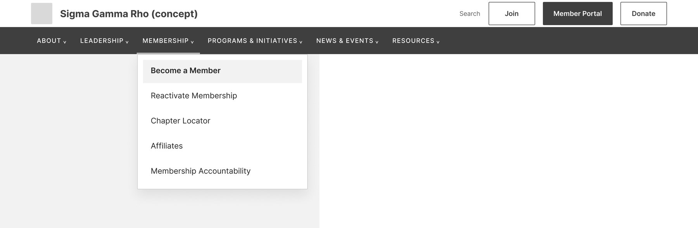
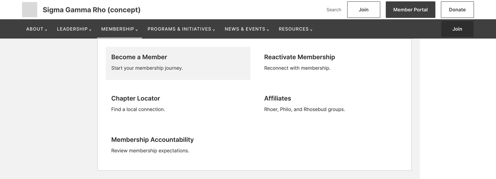
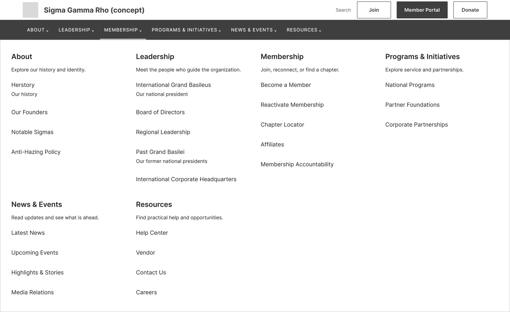
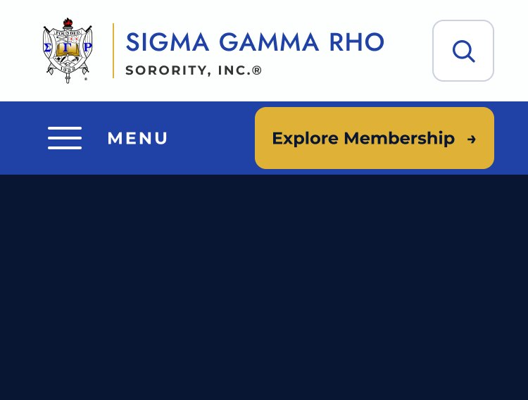
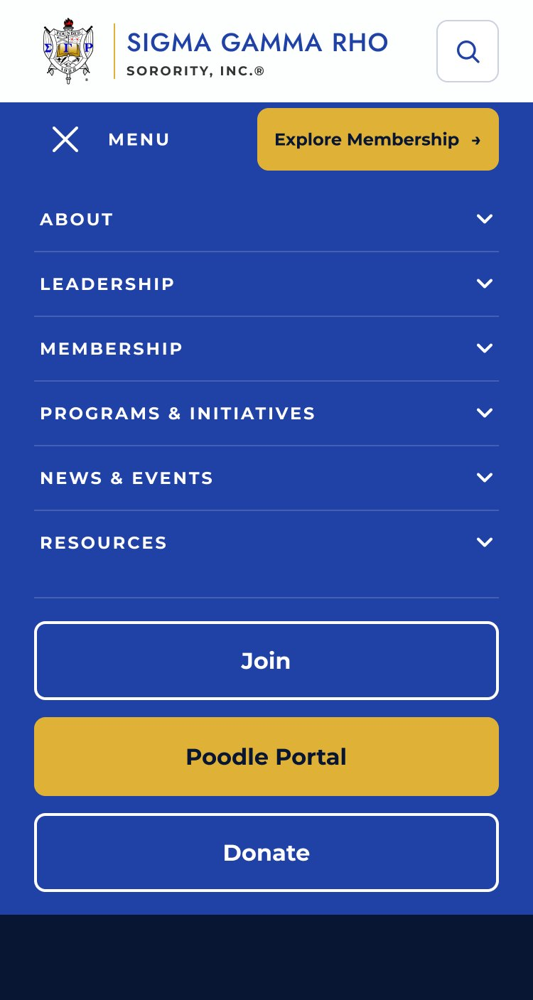
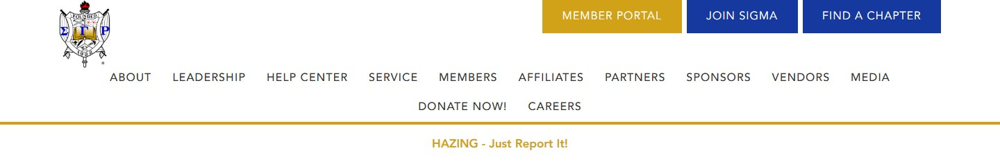
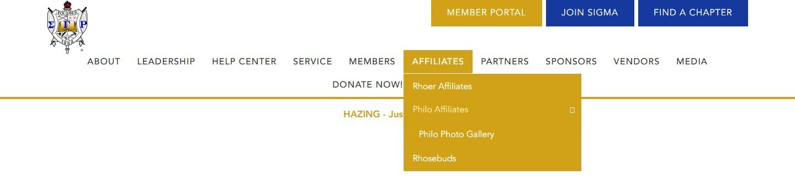
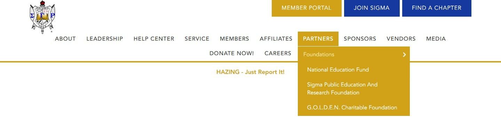

the problem, my contribution, and where it stands
Overview
The original website split membership actions across menus and used titles that assumed visitors already knew the organization. As the independent researcher and designer, I conducted a competitive review, card sorting, and tree testing, then designed a revised navigation structure, desktop and mobile menu states, and a clickable prototype.
Current status: the research evaluated a proposed text-only structure. The interface is a design proposal awaiting participant testing.
the findings beside the decisions they informed
Key evidence
Members recognized the leader; newcomers struggled
Evidence: in the proposed structure’s tree test, 4 of 4 members found the current leader, compared with only 1 of 5 non-members. Two non-members chose the board rather than the individual; two ended in About. This suggests the title needed context, though the small sample cannot isolate terminology from other navigation factors.
Decision: keep the official title and add a plain-language description. This preserves familiar terminology for members while explaining the role to newcomers.
Tested wording
International Grand Basileus
In the prototype
International Grand BasileusCurrent international leader
The revised wording is in the desktop and phone prototype and awaiting testing. The Figma screenshots below predate this copy change. Try the Leadership menu →
Joining was easier to recognize
Evidence: all 9 card-sort participants grouped “Become a Member” with membership actions. In the proposed tree, all 8 who attempted the join task succeeded directly (7.1 seconds on average). The task wording closely matched the destination label, so this supports findability within that tree, not improvement over the original site.
Decision: make Membership a primary category and put “Become a Member” first, giving prospective members a visible starting point.
“Service & Impact” left programs ambiguous
Evidence: only 5 of 8 found community programs, and just 3 went directly there. All three misses selected a foundation. Card sorting grouped programs and foundations together (7 of 9 for National Programs).
Decision: use “Programs & Initiatives” for the shared category. This is my interpretation of the grouping; its wording still needs testing.
from findings to navigation
Design decisions
How to read this map: the counts show card-sort placements, not tree-test success. This view combines research placements with the later “Programs & Initiatives” label. See the tested structure beside later revisions.
About
- Herstory8/9
- Our Founders9/9
- Our Foundations6/9
- Notable Sigmas1/9
- Anti-Hazing Policy3/9
Leadership
- International Grand Basileus8/9
- Board of Directors7/9
- Regional Leadership9/9
- Past Grand Basilei7/9
- International Corporate Headquarters3/9
Membership primary goal
- Become a Member9/9
- Reactivate Membership8/9
- Chapter Locator6/9
- Affiliates4/9
Programs & Initiatives
- National Programs7/9
- Partner Foundations6/9
News & Events
- Latest News9/9
- Upcoming Events9/9
- Highlights & Stories7/9
- Media Relations4/9
Resources
- Help Center8/9
- Vendor8/9
- Contact Us6/9
- Careers5/9
n/9 is how many of the 9 card-sort participants placed that card in this section. Rows shaded lavender are under 50%: placed on content grounds or by plurality, and flagged for retesting.
The original artifact identifies Membership as the primary-goal category. "Programs & Initiatives" is a synthesis label, not card-sort consensus. Four placements rest on judgment more than on the card sort: Notable Sigmas under About (chosen on content grounds; 3 of 9 put it under Service & Impact and 1 of 9 under About), Anti-Hazing Policy under About (3 of 9), International Corporate Headquarters under Leadership (3 of 9), and Media Relations under News & Events (4 of 9, with 3 choosing Resources). Affiliates sits under Membership, the most common placement (4 of 9) though not a majority.
Other placement decisions and tradeoffs
News & Events reintroduced
Time-sensitive content clustered strongly: press, events, and news stayed together.
9 of 9 · Latest News, Upcoming EventsDepth capped at two levels
The original menus ran three levels deep (Affiliates and Partners), so I reduced nesting to make destinations visible sooner. The effect on task time needs testing.
3 levels before, 2 afterContact moved under Resources
Agreement for "Contact Us" was moderate, not enough to justify a standalone top-level item.
6 of 9Affiliates placed under Membership
Membership was the most common placement for Affiliates, though not a majority. I first placed it under Programs, then moved it so the structure follows the data.
4 of 9Header alternatives and the selected pattern
I had already chosen a single-row ribbon in my full redesign. To check that choice rather than assume it, I went back and compared it with two alternative header patterns as greyscale wireframes in Figma, each with the Membership menu open.



Decision: I kept Option 1, the single-row ribbon with dropdowns and Join in the masthead.
Why Option 1: every section stays visible and one click from any page, which suits a two-level structure with six sections. Option 2’s persistent Join competed with the ribbon, and Option 3’s mega menu asked visitors to scan far more than the join task needed.
inspect the interaction, then the screens
Prototype
The desktop menu puts joining first. On mobile, the same destinations keep their order inside an accordion. These Figma screens show the visual design; the interactive prototype also includes the revised leadership helper descriptions.


Try the prototype
Open a menu, search, or switch to the phone view and open the drawer. The destinations are placeholder pages.
Additional mobile states


what was tested and what comes next
Evaluation
So far, the evidence covers the structure, not the interface. The tree test checked a proposed structure with 9 participants. The final design and its prototype have not been in front of users yet, so round 2 tests what changed.
| What I'll measure | Round 1 baseline | Round 2 target |
|---|---|---|
| Non-members finding the current leader | 1 of 5 | At least 4 of 5 |
| Visitors finding community programs | 5 of 8 | At least 7 of 8 |
| Placements resting on judgment | 5 untested | All five tree-tested |
Targets are mine, set before any retest. Round 1 tested a proposed structure, round 2 tests the final design, and each result will be reported next to its baseline with the sample size.
Reflection
My familiarity with Sigma’s titles could hide a newcomer’s difficulty. I kept official titles and added helper descriptions, balancing member expectations with newcomer clarity. Those descriptions are in the prototype and awaiting testing.
methods, detailed results, and limitations
Supporting research
Original navigation and problem context
The site's main job is to start a relationship with people who want to join, yet joining sat outside the main navigation. Twelve top-level links competed for attention, membership actions were split across a "Members" menu and a utility bar, and some menus opened a menu inside a menu. Insider titles assumed the visitor already knew the organization.




Research approach and researcher positionality
Research question: why do prospective members struggle to find membership information, and what does the navigation reveal about the gap between how the organization thinks about its content and how visitors expect to find it?
| Participation by phase | 9 card-sort participants and 9 tree-test participants. Four people took part in both phases (2 undergraduate sorors and 2 non-members); the other five in each phase were different. |
|---|---|
| Card sort segments | 6 sorors (3 undergraduate, 3 alumnae) and 3 non-members |
| Tree test segments | 4 members (3 undergraduate, 1 alumna) and 5 non-members, one of whom belongs to another Divine Nine organization |
| Methods | Competitive analysis of 3 Divine Nine (NPHC) sororities, open card sort (24 cards), tree test (10 tasks) |
Exclusion: one additional card-sort session, submitted on May 29, 2025 after the study closed on May 27, was excluded from the analysis. Including it would not change the main findings: the join grouping stays unanimous, and National Programs agreement would be 70% instead of 77.8%.
Researcher positionality: I am a member of Sigma Gamma Rho, so its structure and titles are familiar to me. That familiarity can make a label feel clearer than it does to a first-time visitor. The card sort included three non-members, and one of them placed “International Grand Basileus” under About while all six sorors put it under Leadership; the tree test included five non-members, and finding the current leader was its weakest task. I recommended keeping official terms and explaining them in plain language.
How I assessed the results
Benchmarks I'm judging against. Set retrospectively. The tree test evaluated a proposed structure, not a live site.
| Goal | Benchmark | Result | Read |
|---|---|---|---|
| Prospective members can find how to join | ≥ 80% direct success | 100% direct, 7.1s average | Met |
| Non-members can find leadership information | ≥ 80% success | 1 of 5 non-members; 5 of 9 overall, 27.6s average | Not met |
| Visitors can find programs | ≥ 80% success | 62.5% success, 37.5% direct | Not met |
| Overall navigation | ≥ 80% average across the 10 tasks | 82.2% | Met, but it masks two weak tasks |
Tested structure and later revisions
| Element | Research version | Current proposal & status |
|---|---|---|
| Membership / Become a Member | Join task: 8 of 8 direct successes. | Retained. Interface presentation still needs usability testing. |
| Leadership titles | Official titles; leader task: 5 of 9 succeeded, including 1 of 5 non-members. | Helper descriptions added to the coded prototype. Copy and interface are untested. |
| Programs label | “Service & Impact”; programs task: 5 of 8 succeeded. | “Programs & Initiatives” replaces it. New label is untested. |
| Later content changes | Our Foundations was under About; Corporate Partnerships and Membership Accountability were absent. | Our Foundations removed from About; Corporate Partnerships added under Programs; Membership Accountability added under Membership. These revisions are untested. |
| Low-agreement placements | Notable Sigmas, Anti-Hazing Policy, Corporate Headquarters, Media Relations, and Affiliates lacked majority card-sort agreement. | Flagged for focused tree-test checks; card-sort counts do not establish findability. |
Components and tokens
Every state is built from one small set of components and values. Changing a color or a component once updates every screen. Hover the specimens below to see their states.
Color
#2041A5Navigation ribbon, links, outline button labels
#DFB136Primary action fill, open-menu underline
#081633Text on gold, deepest backgrounds
#F4F6FBHover fill for menu items and search
#FCFFFEMasthead and panels
#333333Body text
Contrast decision: gold text on royal is only 4.44:1, so on the ribbon the gold stays in the underline and labels stay white. Every gold fill carries navy text, at 8.9:1.
Type
Buttons
Navigation link
Dropdown item
- Default Royal SemiBold 14 on white.
- Hover Tint fill, darker royal label (shown on Reactivate Membership).
- Focus Tint fill plus a 3px gold outline for keyboard users (shown on Chapter Locator).
- Menu White card, 8px radius, soft shadow, at least 260px wide.
Study limitations
- A sample of 9 participants per phase limits how far the results generalize.
- I did not tree-test the original site structure with the same tasks, so I can show how the proposed structure performs but not that it beats the old one.
- The join task names the action it wants ("becoming a member") and the answer is labeled "Become a Member," so its 100% shows the label is findable, not that the structure is strong. The member versus non-member gap on the leader task is the more informative result.
- Participants came from a convenience sample.
- The tree test used a proposed structure, not a live site.
- Four placements rest on judgment more than on the card sort: Notable Sigmas, Anti-Hazing Policy, International Corporate Headquarters, and Media Relations. Tree-test them, along with Affiliates under Membership (4 of 9, not a majority), before treating the structure as settled.
- The final design and its prototype have not been tested with participants. The design's departures from the tested structure and the revised "Programs & Initiatives" label are the next things to test.
The findings above draw on the results below. Open any section to see the complete data.
Competitive benchmarking: 3 Divine Nine sororities compared with the original site
| Navigation feature | AKA | DST | ZPB | SGRho |
|---|---|---|---|---|
| Clear primary CTA (Join) | ✓ | ✓ | ✓ | ~ |
| Dedicated membership section | ✓ | ✓ | ✓ | ~ |
| Dropdown simplicity (<6 items) | ✓ | × | ✓ | × |
| Search functionality | ✓ | ✓ | × | × |
| Visual readability | ✓ | ✓ | ✓ | × |
| Persistent navigation | ✓ | ✓ | ✓ | ✓ |
| Logical labeling | ✓ | ✓ | ✓ | × |
~ means partial for SGRho. The original site had a Join Sigma button, but it sat in the utility bar above the twelve-link primary row. It also had a Members menu that listed Membership beside Collegiate Experience, Alumnae Engagement, and Reactivate Today, rather than a dedicated Membership category. See the March 19, 2025 Wayback captures in the coded-redesign section.
- Membership is always top-level. Every benchmarked organization puts membership in primary navigation. The original site had a Join Sigma button in the utility bar and a Members menu, but no dedicated Membership category in the main row.
- Programs are grouped under one umbrella. Comparable sites keep community work in one category. The original site split it across Programs, Community Impact, and nested dropdowns.
- Partner content is co-located. Peer sites keep partnership content together instead of spreading it across several top-level areas.
Card sort: agreement for all 24 cards (9 participants)
Percentages are the share of all 9 participants who placed an item in the category shown (88.9% = 8 of 9; 77.8% = 7 of 9; 66.7% = 6 of 9). All 24 cards are shown; shorter bars mean more split grouping.
High consensus ≥75%
- Our Founders: 100%
- Become a Member: 100%
- Latest News: 100%
- Upcoming Events: 100%
- Regional Leadership: 100%
- Reactivate Membership: 88.9%
- National Programs: 77.8%
Moderate 50–74%
- Our Foundations: 66.7%
- Partner Foundations: 66.7%
- Chapter Locator: 66.7%
- Contact Us: 66.7%
- Careers: 55.6%
Low <50%
- Affiliates: 44.4%
- Media Relations: 44.4%
- Anti-Hazing Policy: 33.3%
- Notable Sigmas: 33.3%
- International Corporate Headquarters: 33.3%
Tree test: all 10 tasks (9 participants, 82.2% average success)
About "Direct": these percentages are the tree-test dashboard's own directness figures. Counting the exported paths by length (no revisited nodes) gives 50% for both the programs and contact tasks, so treat the direct rates as approximate. Success rates are not affected.
Each task was scored against the 8–9 participants who attempted it. One participant completed only 2 of the 10 tasks, so their responses count only where they apply. 82.2% is the mean of the per-task success rates, which range from 55.6% to 100%.
Join as a member
100%Every participant went directly to Membership → Become a Member, with no hesitation or backtracking.
Reactivate membership
100%Participants went directly to Membership → Reactivate Today, which supports grouping the membership actions together.
Find latest news
100%News & Events worked as an intuitive top-level category.
Get account help
100%Everyone eventually found Resources → Help Center, but half took indirect routes first.
Find a chapter
87.5%Expected path: Membership → Chapter Locator. One participant went to News & Events → Upcoming Events.
Find founders
75%Expected path: About → Our Founders. Some participants mixed this task up with Herstory or Past Grand Basilei.
Contact the organization
75%Expected path: Resources → Contact Us. Some participants looked in membership-related areas first.
Find organization origins
66.7%Expected path: Home → About → Herstory. Participants often read "origins" as Founders or Foundations.
Find community programs
62.5%Based on the card-sort and tree-test evidence, I revised the tested label "Service & Impact" to "Programs & Initiatives."
Find current leader
55.6%Expected path: Home → Leadership → International Grand Basileus. This confirmed the terminology barrier seen in the card sort.